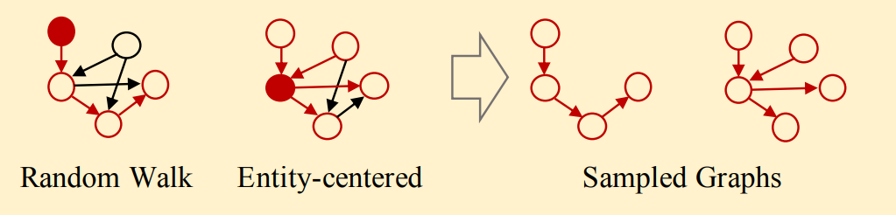
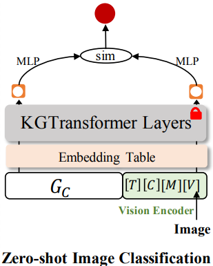
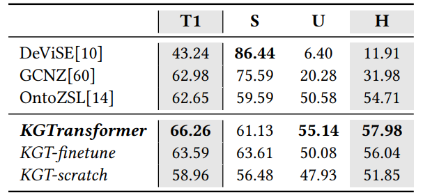
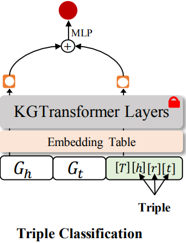
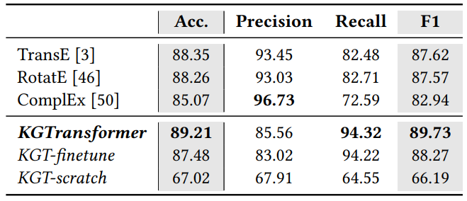
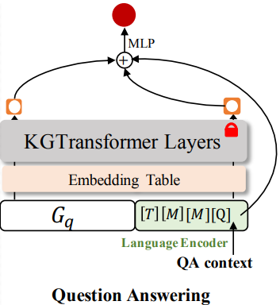
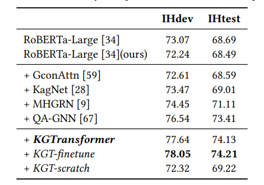

Structure Pretraining and Prompt Tuning for Knowledge Graph Transfer 论文阅读
总结
这篇论文是发表在 WWW’23 上的一篇知识图谱融合方向的论文，使用的是 Transformer 架构。整体思想上借鉴了 NLP 领域的预训练 + 微调的设计思想。
- 通过大量的知识图谱训练样本预训练出一个知识图谱模型。
- 之后在面对下游任务时冻结模型参数，重新训练 embedding 用于适配下游任务的任务场景。
- 继续冻结模型参数，用 Prompt Tuning 的方法将任务表示为 Prompt 的一部分，进行微调，适配下游任务的任务内容。
论文原文链接：Structure Pretraining and Prompt Tuning for Knowledge Graph Transfer
相关知识
知识图谱表示方法
知识图谱表示方法是指通过模型中的参数和函数对知识图谱中的信息进行编码，它们可以恢复图结构并捕捉实体与关系之间的语义。在分类上，可以分为 3 类：
- 基于嵌入的方法：模型直接学习知识图谱三元组中实体和关系的 embedding。经过学习之后，这些 embedding 就可以隐式捕捉知识图谱元素中的相似性、关系、层次、公理等信息。例如 RotatE。
该方法学习到的都是特定关系、实体的 embedding，所以能力范围仅仅局限于训练样本中见过的关系和实体。如果下游任务出现了训练中没有出现过的关系和实体，模型表现就会很差。
- 基于结构的方法：模型学习知识图谱中的图结构，比如节点之间的距离、度数。由于学习过程中并没有学习特定知识图谱的关系、实体。因此具备处理训练中没有出现过的关系和实体的能力。例如 GraIL。
- 混合方法：顾名思义，又学习实体、关系的嵌入表示，又学习图结构。
GNN 可以用于方法 2 和 3，区别在于 GNN 的输入是预先定义好的图结构，还是嵌入表示。
Transformer 则可用于方法 1、2、3，具体在于注意力机制的使用。
知识图谱融合方法
知识图谱近些年主要作为一种重要的附加信息，将其融入特定任务中，用于增强模型在特定任务上的表现，在分类上，可以分为 2 类：
- 开箱即用：通常会预先对知识图谱（KGs）进行表示学习，并将训练好的实体和关系表示作为下游模型的输入或用于集成。这种预训练的嵌入在训练下游模型时可以保持固定或进行微调，例如 OntoZSL、EmbedKGQA。
- 端到端：设计一个可学习的知识图谱编码器，然后与下游模型一起训练。例如 RippleNet。
端到端这种方法就很类似于现代多模态大模型中输入图片的方法，也是用一个编码器进行的。
模型设计
知识图谱的表达： 三元组 $${\tau _{in}} = \{ ({h_i},{r_i},{t_i})|i \in [1,k]\} $$ 分别代表头实体、关系、尾实体。例如 $({Obama},{president},{USA})$
Transformer输入序列：将三元组序列化为一系列 token $${s_{in}} = [[B],{h_1},{r_1},{t_1},[S],{h_2},{r_2},{t_2},...,{h_k},{r_k},{t_k},[S]]$$ 其中，
[B]和[S]都是特殊的 token，分别代表序列的开始记号和三元组之间的分割记号。
[B] 的作用是汇聚序列的全局信息，这在 Transformer 中很常见。
[S] 的作用是分割，这是因为 h，r，t 可能需要不止固定的 3 个 token 来表示，所以需要分隔符。
- 注意力矩阵：用于建模图结构，即三元组之间的邻居关系。
$$\eqalign{
& M = \left\{ {\matrix{
{\matrix{
1 & {i = 1|j = 1} \cr
} } \cr
{\matrix{
1 & {trp(i) \cap trp(j) \ne \phi } \cr
} } \cr
{\matrix{
0 & {otherwise} \cr
} } \cr
} } \right\} \cr
& \matrix{
{trp(i) = \{ {h_p},{r_p},{t_p}\} } & {p = \left\lfloor {(i - 2)/4} \right\rfloor } \cr
} + 1 \cr}
$$
这里的
i,j代表了序列中的 token 下标，M 中的第一栏是为了让[B]可以注意到全部的三元组，进而聚合全局信息，第二栏代表的是三元组的一跳、二跳邻居、具有相同关系的三元组可以互相关注，其余的三元组之间不能互相关注。
这个 M 矩阵本质建模出了知识图谱的图结构，用于解决在输入序列中，可能有关系的两个三元组距离相差很远的情况。
另外，相比于 GNN 可以一次就关注到二跳邻居，计算上比较有效率。
最后，这里 $p$ 的计算方式，其实默认了 $h,r,t$ 只用 3 个 token，不然是对不上的。
- 注意力计算：
$$\eqalign{
& H = {[s_1^T,...,s_n^T]^T} \in {R^{n \times d}} \cr
& Q = H{W_Q},K = H{W_K},V = H{W_v} \cr
& A = {{Q{K^T} \odot M} \over {\sqrt {{d_k}} }} + (1 - M) \times \delta \cr
& Attn(H) = soft\max (A)V \cr} $$
这里的 $\delta$ 是一个非常大的负数，用于把 $ M_{ij} = 0 $ 对应的 $A_{ij}$ 在 Softmax 后拉为 0。
$s_i$ 代表一个个 token。
训练数据
训练使用知识图谱的子图进行训练：设子图为 G，首先随机在图中选一个实体 e
- 随机游走：选择 $ (e^{‘},r,e) $ 或者 $ (e,r,e^{‘}) $，然后选定实体 $ e^{‘} $，重复上述操作 k 次。
- 中心游走：首先将 e 的一跳邻居全部纳入子图 G，如果加入的三元组数量小于 k，则再随机加入 $ n - k $ 个二跳邻居
数据来源于 WN18RR, FB15k-237 和 Codex， 论文进行了部分处理。

训练方法
类似于 NLP 的预训练任务，论文定义了 3 种预训练任务：
- 实体掩码建模（MEM）: 随机替换一些实体为特殊掩码 Token
[M]，取出最后一层特殊掩码的隐藏状态 $ S^{m}_{e} $，使用一个还原矩阵 $ W_{MEM} $，将该隐藏状态还原为真实实体 Embedding，然后和真实的实体 Embeeding 做内积，比较相似程度，使用二元交叉熵损失。
这里论文选取了一些负例，损失函数本质上是拉近和正例的距离，拉远和负例的距离，最终变为了二分类交叉熵损失。
这是因为实体有很多种，使用多分类交叉熵分类数会很多，计算效率有问题。
- 关系掩码建模（MRM）：随机替换一些关系为特殊掩码 Token
[M]，取出最后一层特殊掩码的隐藏状态 $ S^{m}_{e} $，使用一个还原矩阵 $ W_{MRM} $，将该隐藏状态还原为真实关系 Embedding，然后和真实的关系 Embedding 做内积，得出相似程度，之后用 MLP 进行分类，使用多元交叉熵损失。
- 实体对建模（EPM）：给定两个子图 $ G_{e_{i}} $ 和 $ G_{e_{j}} $，损失函数设计如下：
$${L_{MRM}}({G_{{e_i}}},{G_{{e_j}}}) = \sum\limits_{r \in {M_r}} {CE(MLP([s_{{{[B]}_{{e_i}}}}^m||s_{{{[B]}_{{e_j}}}}^m]),{l_{({e_i},{e_j})}})} $$
[B]是之前提到的用来汇聚全局信息的 token，这里是将两个子图的全局信息 token 的最后一层隐藏层进行拼接然后进入 MLP 打分，得到两个图的相似程度。
损失函数使用交叉熵， $ {{l_{({e_i},{e_j})}}}$ 就是人为给的相似程度标签（0，1）
微调方法
由于下游任务的实体、关系可能并不在预训练中出现过，可能没有对应的 embedding 表示，所以在保持模型参数固定的情况下，在下游任务上进行上述三项训练，学习到下游任务的 embedding 表示。
使用 Prompt Tuning，对任务构建一个三元组：
$${T_{task}} = [[T][H][R][D]]$$其中，
[T]是特殊标记，代表任务序列的开始，[H]和[R]代表头实体和关系，[D]代表尾实体，其表示是从和任务相关的编码器中编码得到的。
将任务三元组拼接到输入序列中，之后使用最后一个隐藏层的部分 token 输出进入解码器进行微调训练，保持模型全部参数固定。
这里有一点难理解，没关系，在实验中会举几个例子帮助理解。
实验测试
- 零样本图片分类：知识图谱给出信息，辅助图片分类。

这里面： $${T_{task}} = [[T][C][M][V]]$$[C]是常规的实体嵌入，[M]是 MASK 掩码，[V]是图片经由 Vison Encoder 后的输出。序列经过模型后，取出 $ S^{[B]}_{e} $ 和 $ S^{[V]}_{e} $，将他们使用 MLP 进行投影，计算相似度。就能得知图片是否属于[C]代表的类。
实验结果： - 三元组分类：知识图谱给出信息，判断三元组是否为真。

这里面: $${T_{task}} = [[T][h][r][t]]$$ 比较简单，就是常规的三元组。序列经过模型后，取出 $ S^{[B]}_{e} $ 和 $ S^{[T]}_{e} $。拼接后使用 MLP 进行打分，判断(h, r, t)的真实性。
实验结果： - 知识问答：知识图谱给出信息，判断Q和A是否对应。

这里面： $${T_{task}} = [[T][M][M][Q]]$$[M]是 MASK 掩码，[Q]是QA文本经由 NLP Encoder 后的输出。序列经过模型后，取出 $ S^{[B]}_{e} $ 和 $ S^{[Q]}_{e} $ 和 QA 经过 NLP Encoder 后的输出，将他们拼接后使用 MLP 预测 QA 正确的可能性。
实验结果：
论文后续
后续论文做了一些消融实验证明了每个预训练任务的重要性，对模型进行了总结评估，这里就不再赘述了。